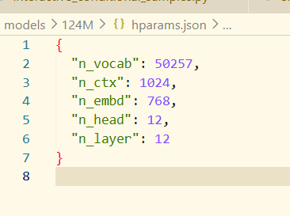
看一下超参数，n_embd是词的维度大小(hidden_size?)，有12个头，12层
交互式采样器，也就是跟用户交互过程，从业务理解开始深入到算法流程中似乎挺好的。
参数：要注意的主要为
nsamples：针对固定输入，要输出多少个采样。
batch_size：一次放进模型，让模型并行产生多少采样。所以这个batch_size必须整除nsamples。
（模型一次产生一个token，这个token是从概率分布中采样出来的，如果采样数多的话就类似于多次随机采样过程拿到了多个结果，batch_size只是为了将采样分到多个batch中来生成）
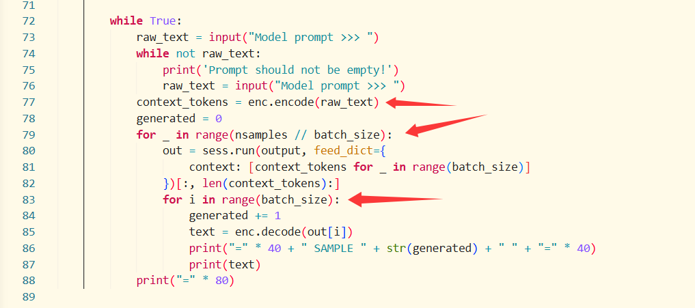
在这里被encoder编码到token index（一系列int，后续在model会转为embedding）
然后context就是重复batch_size个这个sequence
如图，外层迭代会让模型一次获得batch_size的采样。
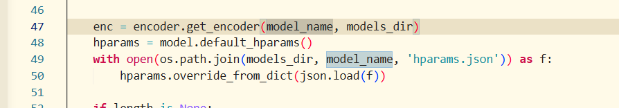
然后前面就是加载encoder和超参数、恢复ckpt模型、设置采样器了。
n_ctx是超参数中的模型上下文长度，length就是输出长度，目前不太清楚，可能要看后面代码。
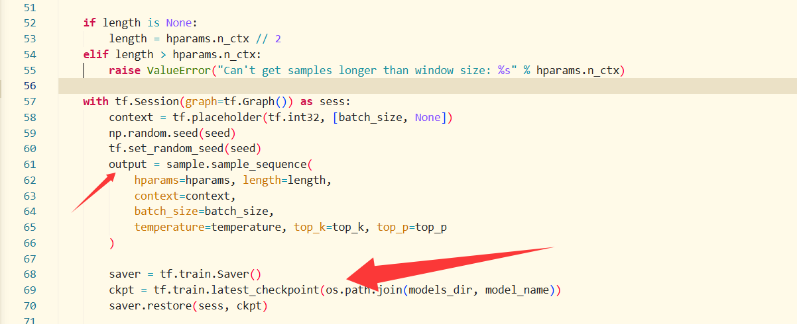
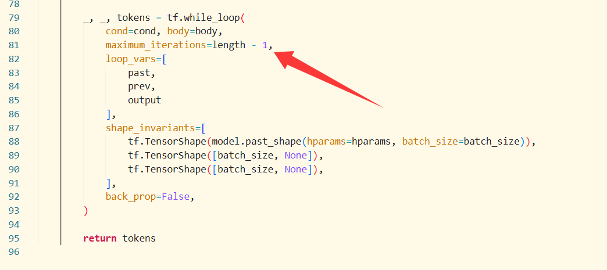
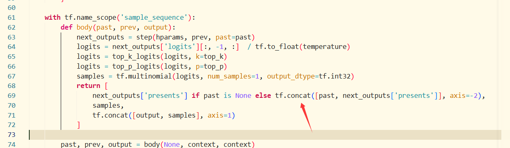
可以看到有past拼接的痕迹，所以大概length就是输出的seq长度。
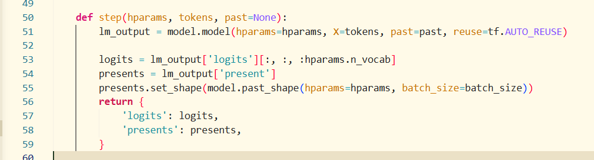
每个step根据model生成的东西返回
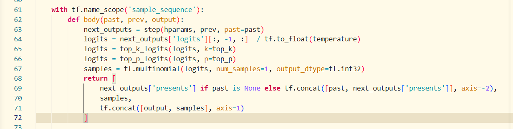
返回之后将presents拼接到past
以及将temp、top_k、top_p应用到logits（也就是词表中每个token的计算出来的真实值）之后
使用tf.multinomial，对logits进行softmax，然后取到samples
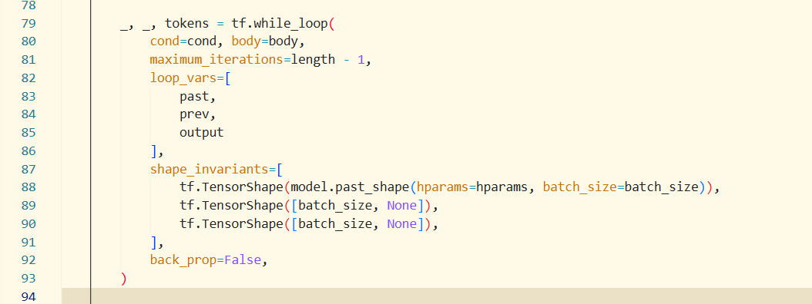
然后就是定义tf的生成loop了，
（具体的形状分析似乎还得先看model.py输出了什么形状）
从后续的分析来看，model返回的logits形状为
(batch_size, seq_len, n_vocab)
从这里的step()中取到:n_vocab之前的
然后body()取到seq_len维度的最后一个seq意思是这次的out
所以形状就是
(batch_size, n_vocab)
然后采样之后就是
(batch_size)个词了
然后prev其实是上一个生成的sequence或者是最开始的一整串sequence，
实际上后续的每次迭代过程中prev都只是一个batch_size的tokens，past才是过往上下文。output是拼接输出。
补充：注意到之前两个步骤中的context的形状已经是[batch_size, sequence_len]了
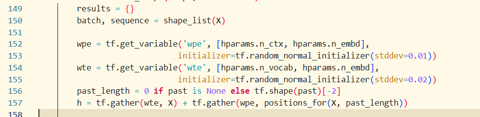
如图，wte就是word token embedding,wpe是word position embedding
gather就是以X为index提取wte的向量。
positions_for是计算当前的X序列在整个context中的位置。没有past的话就不用偏移，如果有的话要偏移。
返回后的形状似乎是这样的：(batch_size, seq_len)
得出来h是相加的(batch_size, seq_len, n_embed)
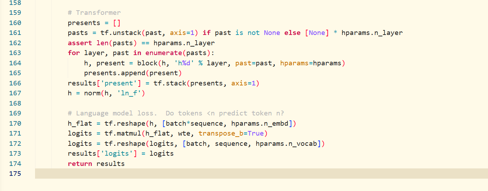
后面这几个就是维护presents和pasts以及做block attention、logits的方法了，在这里要追踪形状的话还得进入到block attention去看看
大概是block->attn这样的调用链，在仔细查看attn之前，我们自底向上一下（此前行文似乎有一些问题，自顶向下看结果细节不太清楚，应该自底向上）
conv1d
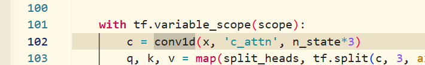
在attention的第一步就conv1d，首先传入的x就是h
形状(batch_size, seq_len, n_embed), n_state = n_embed
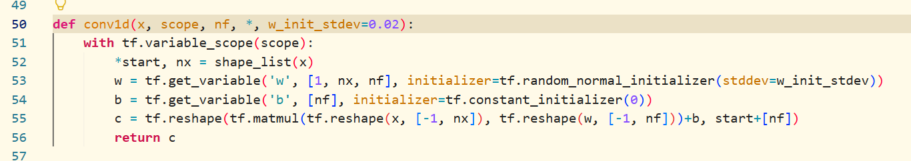
从这里来看就是x跟w乘了并且+b，然后reshape这个nx->nf
也就是说返回的形状是
present KV
(batch_size, seq_len, n_embed*3)
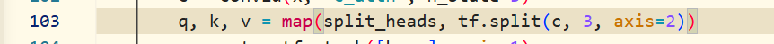
然后该行是将这个形状先用split切分成
(batch_size, seq_len, n_embed) * 3，然后split_heads将每个整块的Q,K,V切分成
(batch_size, heads, seq_len, n_embed / heads) 也就是多头注意力了
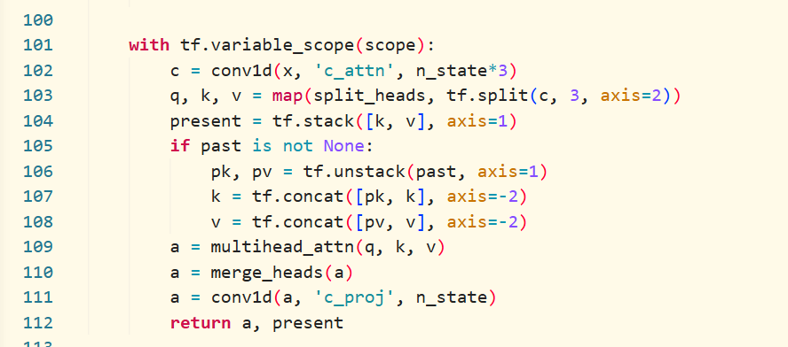
104行我们看到在1的维度上新增维度，那么present形状为(batch_size, 2, heads, seq_len, n_embed / heads)
这时就能解答此前关于present形状的问题了，由于这个present在这里计算之后就没有修改，是直接返回到model了
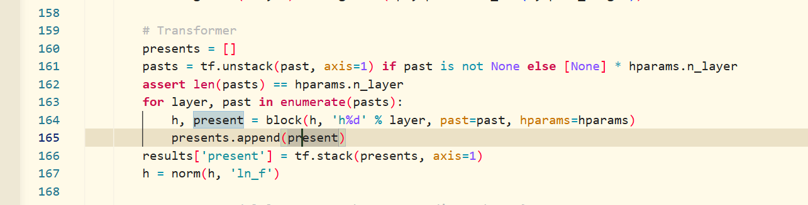
那么stack之后就是
(batch_size, n_layer, 2, heads, seq_len, n_embed / heads)
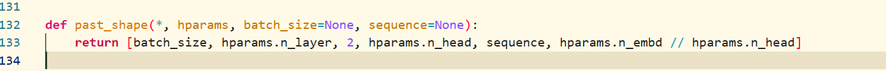
解答了sample.py中past_shape这个问题
拼接和其余
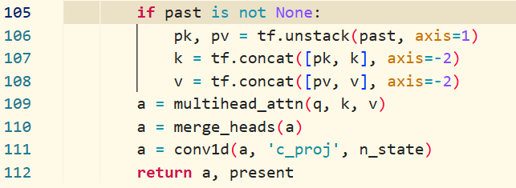
attn中剩下的这些就是把pastk,v拼接到当前kv的前面了。然后注意力、合并头、继续conv1d...
逻辑注意点
在这里靠kv串一下主线，sample利用past存储每个阶段产生的k,v
model进行分层block处理，每层递进使用h，但是pk,pv是相同的，不过因为h递进了，所以当前产生的k,v是不同的。
最后就是在attn里面拼接过往的k,v了。
既然最关键的各种处理流程我们都知道了，那我们就知道每次输出的东西为什么是这样了。
相比于模块化的难懂的代码这个gpt-2本身代码信息密度还是很高的。
这之后分析更多的细节，比如norm、logits计算、softmax想必就不难了（偷懒中...）。
单sample
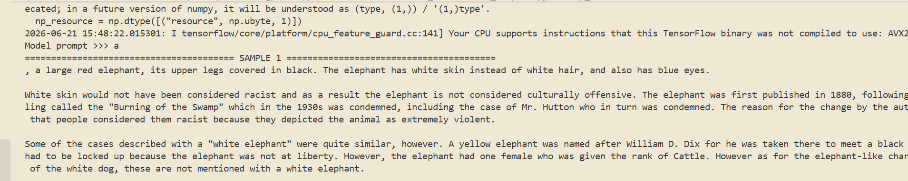
4个sample
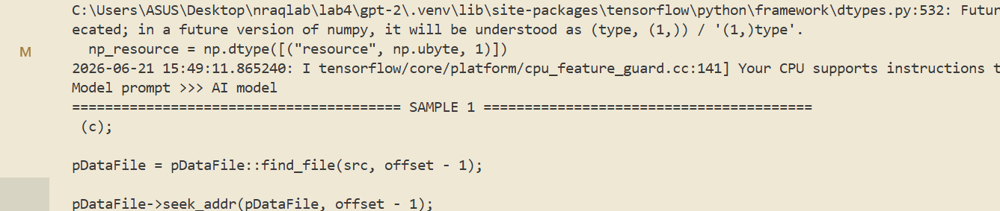
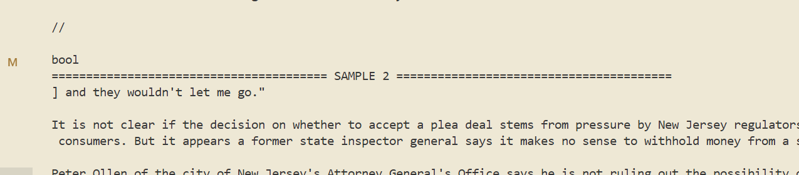
xx所以居然是生成多个sample序列我还以为是一次生成多个sample然后每个子节点再生成n个sample（似乎会爆炸）
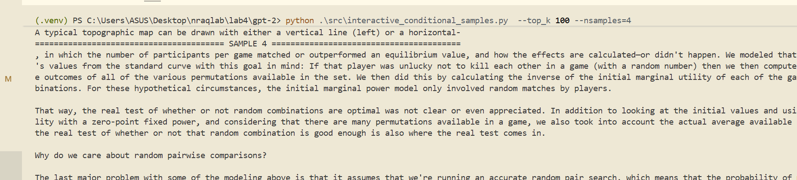
那batch的意义估计就是类似于目前的multi-request的那种batch处理了，也挺好。